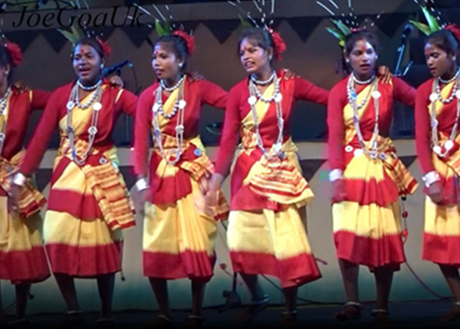
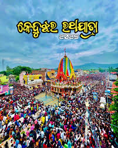
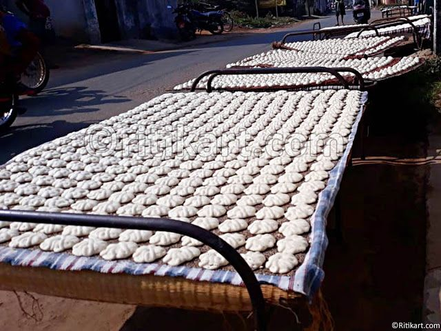
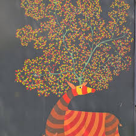
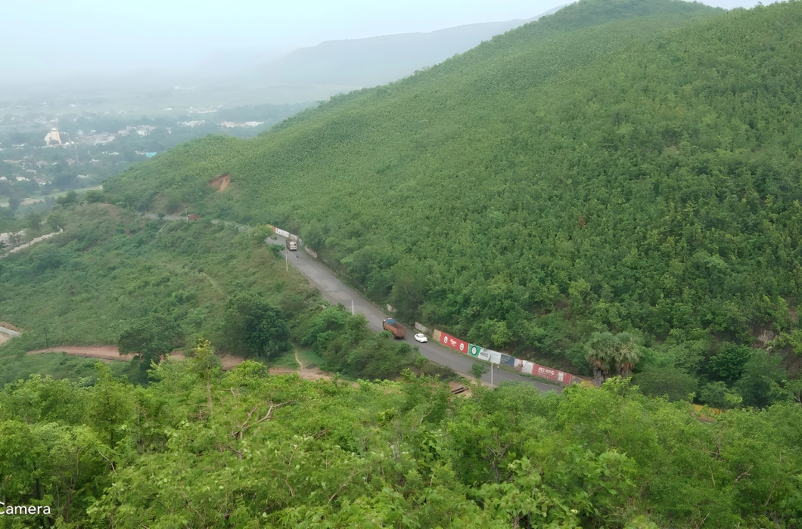

Culture of Keonjhar
Keonjhar has a simple and beautiful cultural life. Its culture is connected with tribal traditions, forests, hills, local festivals, music, dance, and traditional food.

Tribal Lifestyle
Keonjhar is known for its tribal communities who live close to nature and follow traditional customs.
Their lifestyle, dress, language, food, and festivals give Keonjhar a unique cultural identity.

Folk Dance & Songs
Folk dance and music are important parts of Keonjhar culture. People perform traditional dances during festivals and village celebrations.
Local songs, drums, and simple musical instruments make the celebrations lively and joyful.

Local Festivals
Festivals in Keonjhar are celebrated with devotion, happiness, family gatherings, music, dance, and traditional food.
These festivals show the unity, faith, and cultural values of the local people.

Traditional Food
The food culture of Keonjhar is simple, healthy, and connected with local ingredients.
Rice, Dalma, Pakhala, leafy vegetables, and homemade dishes are common in daily life.

Handmade Art
Keonjhar has traditional handmade art created by local and tribal communities.
Bamboo work, wooden crafts, simple decorations, and handmade items reflect the creativity of people.

Nature Connected Life
Keonjhar culture is deeply connected with forests, rivers, hills, farming, and natural surroundings.
Nature plays an important role in the daily life, festivals, occupations, and traditions of the district.